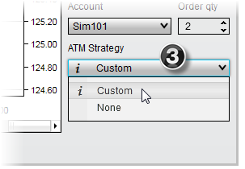
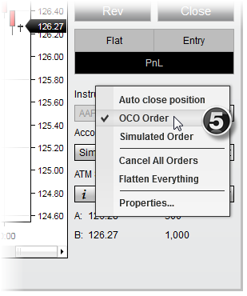

|
<< Click to Display Table of Contents >> Submitting Orders |


|
Submitting Orders
|
<< Click to Display Table of Contents >> Submitting Orders |
|
There are several methods that can be used to submit orders directly from a chart using Chart Trader.
Submitting OrdersTo submit an order via the Chart Trader panel:
1. If you have more than one instrument applied to the chart, select an instrument on which to place the order via the Instrument dropdown menu
2. Select the order time-in-force via the TIF dropdown menu
3. Select an account via the Account dropdown menu
4. Enter an order quantity in the Order Qty field
5. If you would like to use an Advanced Trade Management (ATM) strategy with the order, set the ATM Strategy options via the ATM Strategy dropdown menu. Options in this menu include: a)None: Orders are submitted without an attached ATM Strategy b)Custom: This will open the Custom Strategy Parameters window, in which you can create and save a new ATM Strategy. c)<Strategy Name> - X: A strategy template name followed by a number represents an active instance of an ATM Strategy on the chart. d)User Defined Strategy Template: Stops and targets are submitted from a predefined user template
A more thorough explanation of these concepts can be found on the ATM Strategy Parameters page.
With these parameters set, you can then enter an order with any of the methods described in the sections below. |
 Understanding order options in the right click menu
Understanding order options in the right click menu
Order OptionsOrder options will appear in the right click menu when Chart Trader is enabled. These options provide the ability to select pre-defined order types and prices based on the location of your mouse cursor. After right mouse clicking in the chart panel to view the right click menu, left mouse click on the desired order option to submit an order. After an order has been submitted in this way, it can be moved or canceled at will before it is filled.
Stop-Limit OffsetWhen submitting a stop-limit order, a numeric field will appear, allowing you to set the limit offset of the order (the number of ticks away at which you wish to place the Limit price of the Stop-Limit order). Either by using your mouse scroll wheel or clicking on the up/down arrows in the numeric field, set the number of ticks and press the checkmark button to complete the order submission. For example, if you intend to place an order with a buy Stop price of 1000 and a Limit price of 1001 (4 ticks for the S&P E-mini contract), you would set the numeric field value to 4. Following the same example and submitting a sell stop-limit order, setting the numeric field value to 4 would result in a stop price of 1000 and a limit price of 999. Pressing the "X" button will cancel the order submission operation.
The numeric field also supports negative values. When a negative value is entered, a Simulated Stop order will be place (see the "Understanding Simulated Stop Orders" section below). |
 Understanding the Quick Buttons
Understanding the Quick Buttons
Quick ButtonsYou can quickly submit orders via the Chart Trader panel's Quick Buttons.
Button Actions
Buy Mkt - Submits Buy order at market
Sell Mkt - Submits Sell order at market
Buy Ask - Submits a Buy Limit order at the Ask price
Sell Ask - Submits a Sell Limit order at the Ask price
Buy Bid - Submits a Buy Limit order at the Bid price
Sell Bid - Submits a Sell Limit order at the Bid price |
 How to scale in or out of an active ATM strategy
How to scale in or out of an active ATM strategy
Scaling In or Out of an Active ATM StrategyWhen you have an active strategy selected in the ATM Strategy dropdown menu, any new orders submitted will scale into or out of that active strategy instance. Once filled or partially filled, existing stop loss and profit target orders will be modified to reflect the new position strategy size. You can preset a default scale in or out quantity via the "Scale Quantity" property accessible via the Chart Trader properties window. As an example, your initial strategy may call for opening a position of four contracts, but you want subsequent scale orders to be only one contract. If the Chart Trader's "Scale Quantity" property is set to a value of 1, the Qty (Quantity) field will be set to a value of 1 automatically when an active strategy is selected in the list.
|
 Understanding "One Cancels Other" (OCO) orders
Understanding "One Cancels Other" (OCO) orders
OCO Orders (One Cancels Other)One Cancels Other functionality ties two resting order together, so that when one is canceled or filled, the other will be canceled automatically. This can be ideal for manually placing bracket entry orders, or placing Stop Loss and Profit Target orders. Stop loss and profit target orders submitted automatically via an ATM strategy are always sent as OCO; however, you can submit entry or exit orders as OCO orders as well. Why? The market may be trading in a channel and you wish to sell at resistance or buy at support, whichever comes first by placing two limit orders at either end of the channel.
To place OCO orders, first right mouse click within the Chart Trader panel, then select the menu item OCO Order or use the default Hot Key CTRL+Z.
All orders placed while OCO is enabled will be part of the same OCO group. Once any order of this group is filled or cancelled, all other orders that belong to this group will be cancelled. If you want each OCO order to create it's own set of stop loss and profit target brackets, ensure that the ATM Strategy drop down menu is set to either Custom or an ATM Strategy template before you submit each OCO order.
Example: Below are steps for submitting a Sell Limit and a Buy Limit order via OCO.
1. Enable OCO
2. Notice that there is a green OC at the top right of the chart, indicating OCO is enabled. Place a Buy Limit order

3. If you are initiating two orders to enter a new strategy, then re-select the strategy in the strategy selection list
4. Place a Sell Limit order

5. Disable OCO (it is critical that you disable OCO before submitting another OCO group) |
 Understanding simulated stop orders
Understanding simulated stop orders
Simulated Stop Orders (Simulated Order)Simulated Stop Orders allow you to place orders that trigger at a specific price but try to fill at a better price. To submit a Simulated Stop order, you must enable Simulated Orders via the right click menu and select the Simulated Order menu item, or use a user-defined Hot Key. All stop orders placed while this setting is enabled will be submitted as a Simulated Stop order.
One of the powerful features of Simulated Stop orders is that you can submit a "negative limit stop-limit" order. This means that you can place an order in which the Limit price is better than the Stop price. As an example, you may want to buy on strength indicated by a move up to a particular price. Once that occurs, you want to enter at a better price using a limit order several ticks below the stop price. Any stop-limit order submitted with a negative limit offset automatically becomes a simulated order and will be held on your PC until the stop is triggered or canceled. |